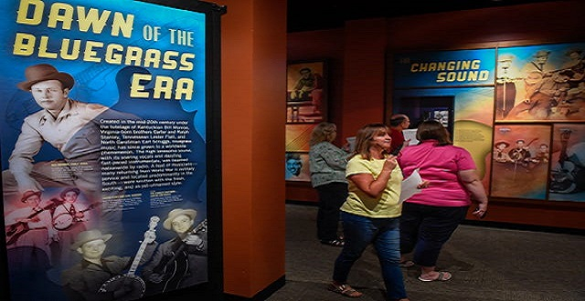
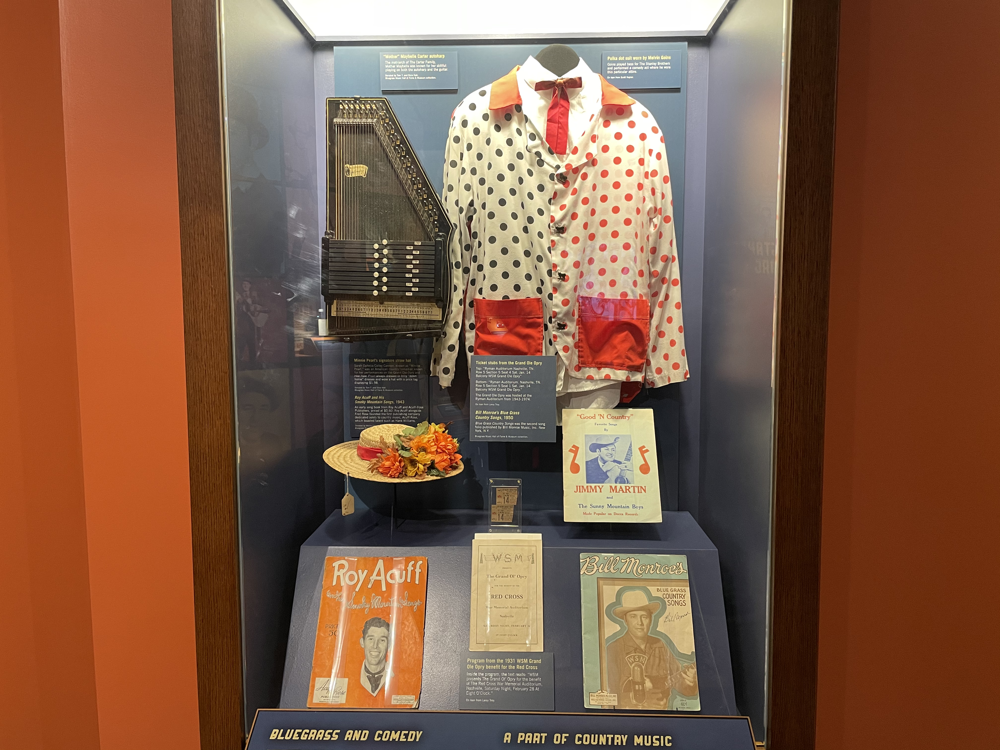
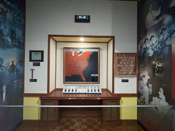

The Beginning of it All
Created in the mid-20th century under the tutelage of Kentuckian Bill Monroe, Virginia-born brothers Carter and Ralph Stanley, Tennessean Lester Flatt, and North Carolinian Earl Scruggs, bluegrass music has since grown to a worldwide phenomenon. The high lonesome sound, with its soaring vocals and dazzling fast-paced instrumentals, was beamed nationwide by radio. A host of musicians- many returning from World War I1 military service and located predominantly in the South - were smitten with the fresh, exciting, and as-yet-unnamed style. An early song book from Roy Acuff and Acuff-Rose Publishers, priced at $0.60. Roy Acuff alongside Fred Rose founded the first publishing company dedicated solely to country music, Acuff-Rose, which boasted talent such as Hank Williams.
Minnie Pearl's signature straw hat: Sarah Ophelia Colley Cannon, known as "Minnie Pearl," was an American country comedian known for her performances on the Grand Ole Opry and Hee Haw. Pearl always dressed in frilly "down home" dresses and wore a hat with a price tag displaying $1.98.
Before television, radio dominated home entertainment. A handful of urban stations blanketed the country, particularly during the evening hours. Shortly after World War ll, small stations Known as "daytimers" began popping up all over North America. Many used live programming as part of their broadcasting mix. In the rural South. this often included the acoustic string band sound that came to be known as bluegrass. For musicians who took to the airwaves for little or no money, It was a way to get professional performing experience, promote personal appearances in the local area, and gain a degree of name recognition.
Information provided by The Bluegrass Museum and Hall of Fame.